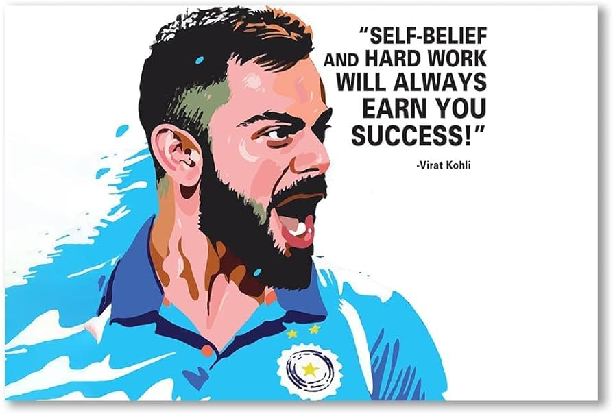

Tribute to Virat Kohli: The Cricket Maestro
Virat Kohli, born on November 5, 1988, in Delhi, India, is not just a cricketer; he is a phenomenon. His journey from a young boy with dreams to one of the greatest batsmen in the history of cricket is nothing short of inspirational. Known for his unparalleled batting skills, relentless dedication, and charismatic leadership, Kohli has left an indelible mark on the world of sports
Why Virat Kohli is My Inspiration
Virat Kohli inspires me not just because of his cricket skills, but also because of his hard work and determination. He started as a young boy with big dreams and became one of the best cricketers in the world. His journey shows that with hard work and passion, anything is possible.
One moment that really stands out is when his father passed away during an important match. Despite his loss, Virat chose to stay and play, showing his strong commitment and focus. This showed me how important it is to stay dedicated, even in tough times.
Kohli's dedication to fitness and improvement is also very inspiring. He always works hard to be the best, setting a great example for others. His leadership on the field has led India to many victories, but he also handles defeats with grace, always learning and growing.
Off the field, Virat Kohli gives back to society through his foundation, helping underprivileged children and young athletes. His kindness and generosity make him a true role model.
In short, Virat Kohli inspires me because he shows that with hard work, dedication, and a big heart, we can overcome any challenge and achieve great things.